HSRP — Haute Disponibilité de Passerelle Réseau
Réseau · Haute Disponibilité · Cisco Packet Tracer · HSRP · Priorité & Preempt · Simulation de panne
Sur un réseau local classique, la passerelle par défaut est un point de défaillance unique : si le routeur tombe, tous les postes perdent leur accès vers l'extérieur, même si un second routeur fonctionnel est disponible juste à côté. HSRP (Hot Standby Router Protocol) résout ce problème en faisant partager à plusieurs routeurs une adresse IP virtuelle commune : les postes du LAN pointent vers cette IP unique, tandis que les routeurs négocient entre eux lequel d'entre eux la porte activement à un instant donné. Ce lab configure deux routeurs en HSRP puis simule la panne du routeur actif pour vérifier que la bascule vers le routeur de secours est bien transparente pour les postes clients.
Environnement
Router1 Cisco 2911 · 192.168.0.2
Router0 Cisco 2901 · 192.168.0.3
IP virtuelle HSRP 192.168.0.1
Groupe HSRP 200
Priorités Router1 = 60, Router0 = 50
Topologie
Deux routeurs (Router1 et Router0) sont chacun reliés à Internet via leur propre liaison série, et partagent tous deux une interface sur le commutateur du LAN. Trois postes clients (PC0, PC1, PC2) s'appuient sur une seule et même passerelle — l'IP virtuelle HSRP 192.168.0.1 — sans jamais avoir besoin de savoir lequel des deux routeurs la porte réellement.
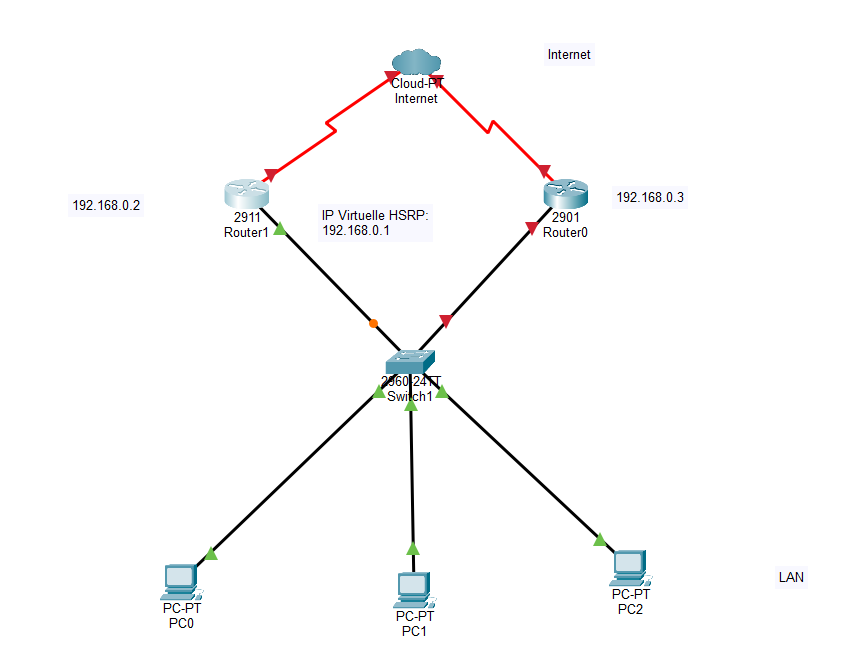
| Équipement | Modèle | Interface LAN | Interface WAN (Serial0/0/0) | Rôle |
|---|---|---|---|---|
| Router1 | Cisco 2911 | Gi0/0 – 192.168.0.2/24 | 10.0.0.2/8 | HSRP priorité 60 (Actif) |
| Router0 | Cisco 2901 | Gi0/0 – 192.168.0.3/24 | 10.0.0.3/8 | HSRP priorité 50 (Standby) |
| PC0 / PC1 / PC2 | PC-PT | Fa0 – .10 / .11 / .12 | — | Postes clients du LAN |
Adressage IP des Routeurs
Chaque routeur reçoit une adresse sur son interface LAN (GigabitEthernet0/0) et sur son interface WAN (Serial0/0/0) avant toute configuration HSRP.
Router1
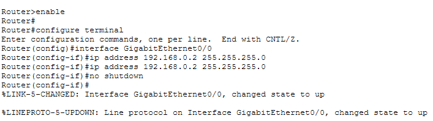
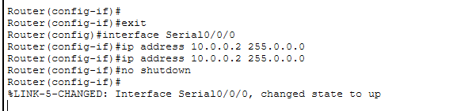
Router0
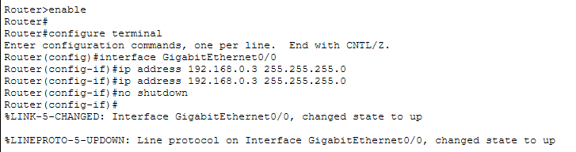
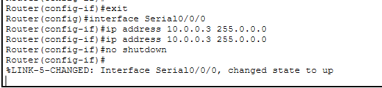
Configuration HSRP — Priorité et Preempt
Sur l'interface LAN de chaque routeur, le groupe HSRP 200 est créé avec l'IP virtuelle 192.168.0.1. La priorité détermine lequel des deux routeurs devient actif : Router1 reçoit la priorité la plus haute (60 contre 50), il devient donc le routeur actif par défaut. L'option preempt est activée sur les deux routeurs — elle garantit que Router1 reprendra automatiquement le rôle actif dès qu'il redeviendra disponible après une panne, plutôt que de laisser Router0 actif indéfiniment par défaut.
Router1 — priorité 60
Les logs %HSRP-6-STATECHANGE confirment la progression normale d'un routeur qui prend le rôle actif : Speak → Standby puis Standby → Active.
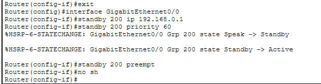
Router0 — priorité 50
Avec une priorité inférieure, Router0 reste en Standby : il surveille Router1 en permanence via des messages Hello, prêt à prendre le relais s'il cesse de répondre.
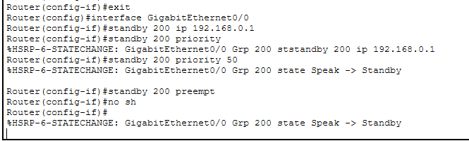
Adressage et Connectivité des Postes Clients
Les trois postes reçoivent une IP statique sur le même sous-réseau que la passerelle virtuelle (192.168.0.0/24) : PC0 en .10, PC1 en .11, PC2 en .12.
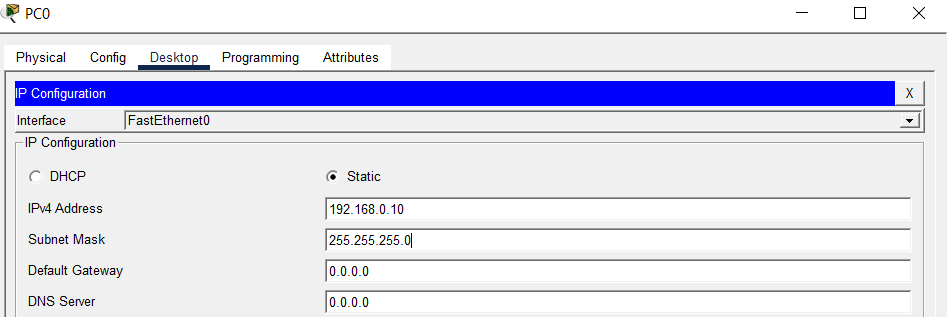
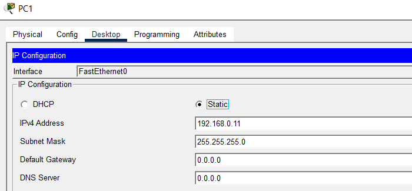
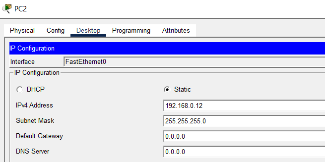
Avant tout test de bascule, la connectivité de base entre les trois postes est validée par des pings croisés — tous réussissent à 0% de perte, confirmant que le LAN fonctionne normalement.
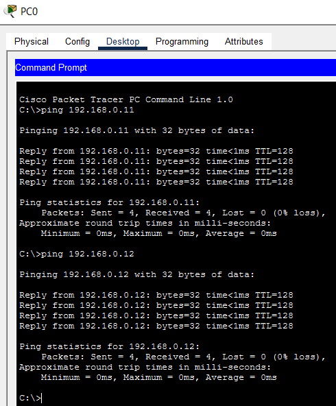
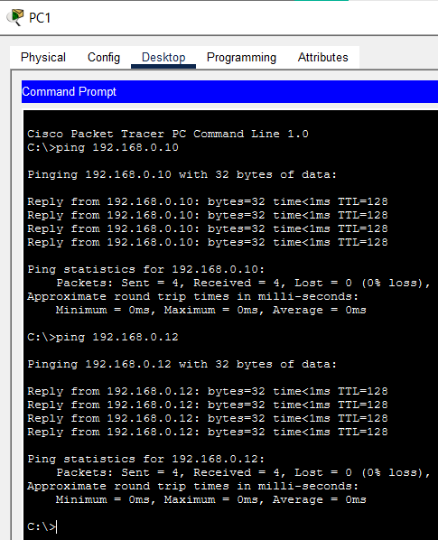
Test de Bascule — Simulation de Panne du Routeur Actif
Pour valider que HSRP fonctionne réellement, l'étape la plus importante du lab consiste à provoquer une panne volontaire de Router1 (le routeur actif) et à observer si le service reste disponible malgré tout.
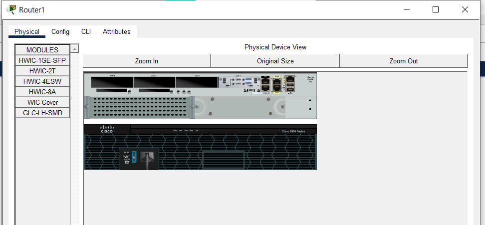
La topologie confirme l'interruption : le lien entre Router1 et le commutateur du LAN passe en état bas (flèche rouge), tandis que le lien de Router0 reste actif (flèche verte).
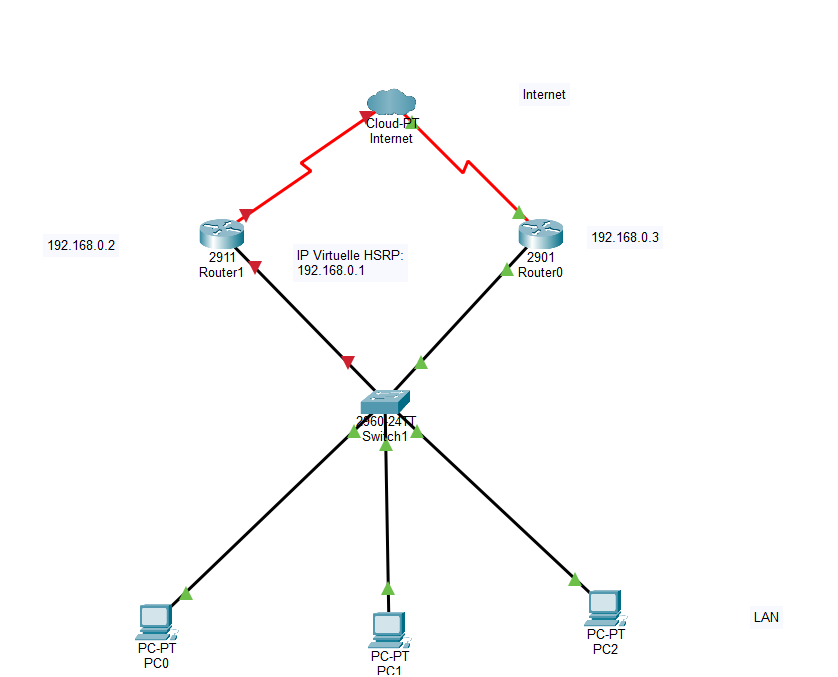
Trois pings confirment ensuite ce qui se passe réellement pour le réseau :
Router1 (192.168.0.2) — injoignable, la panne est bien effective.
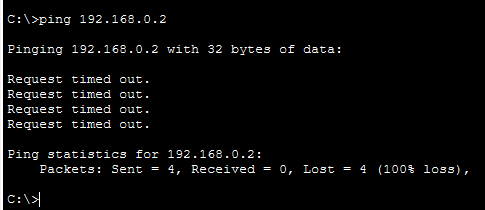
Router0 (192.168.0.3) — toujours joignable, le second routeur fonctionne normalement.
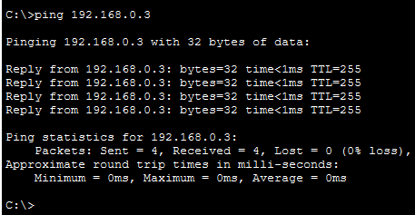
Passerelle virtuelle (192.168.0.1) — toujours joignable malgré la panne de Router1.
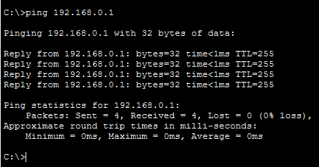
Bilan : c'est le résultat central du lab — la passerelle virtuelle 192.168.0.1 reste joignable à 0% de perte alors même que Router1, son porteur habituel, est totalement injoignable. Router0 a détecté l'absence des messages Hello de Router1 et a repris le rôle actif du groupe HSRP sans aucune intervention manuelle et sans qu'aucun poste client n'ait besoin de changer sa configuration de passerelle. C'est exactement l'objectif d'un protocole de haute disponibilité de passerelle : transformer une panne matérielle en non-événement pour les utilisateurs du réseau. La preempt configurée plus tôt garantit en complément que Router1, une fois réparé, reviendra automatiquement au rôle actif plutôt que de laisser la bascule en place indéfiniment.